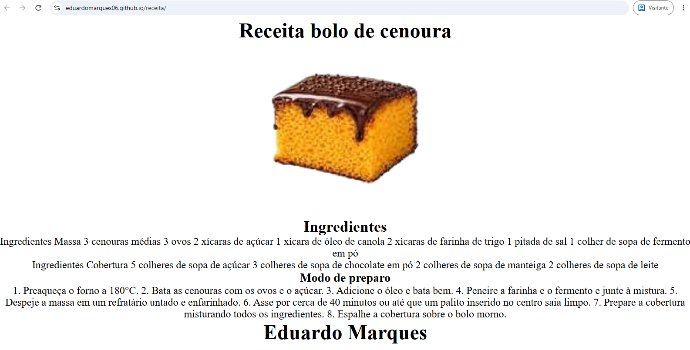
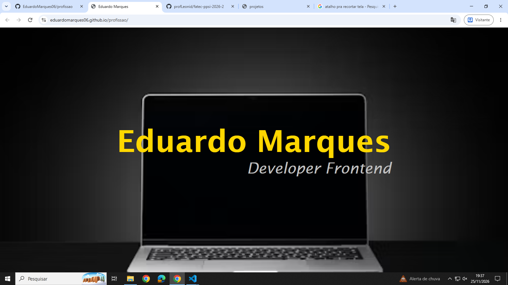
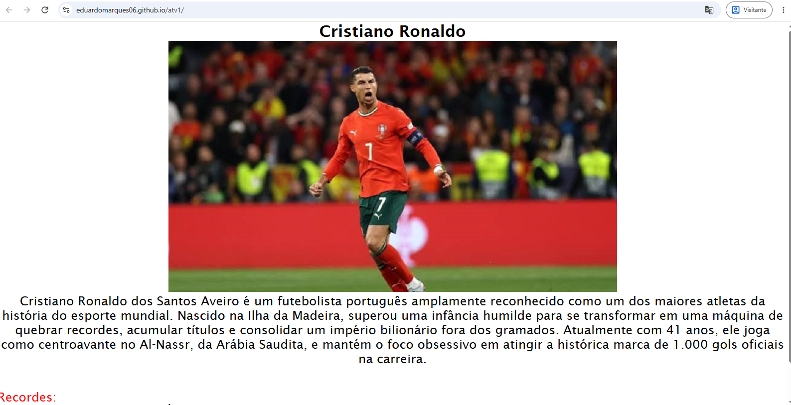

1. Receita

Neste projeto aprendi sobre o básico do html como inserir texto e imagem
em uma página html, fazendo uma home simples que exibe a imagem e parte de uma receita de bolo
2. Receita

Neste projeto aprendi sobre a como manipular uma imagem no html e css
3.Personagem

Este projeto é a continuidade do 1° mas com a liberdade de poder escolher
qualquer personagem para replicar o que foi aprendido
4.Layouts
Neste projeto aprendi a utilizar o flex para mexer no estilo,alinhamento e posicionamento
dos itens presnetes na nossa pagina
5. Galeria
Neste projeto aprendi de forma mais aprofundada sobre o display flex para organizar imagens de diferentes tamanhos e estilos
6. Pizzaria
Neste projeto tudo que foi aprendido sobre display flex é utilizado para criar uma home de um site
de uma pizzaria organizando texto e imagem
7. Coca-cola
Neste projeto aprendi sobre a responsividade e em como deixar minha pagina bonita e de facil entendimento em
diferentes dispositivos ex:celular,tablet e desktop
8. Figma
Neste projeto aprendi a utilizar a ferramneta figma para desenvolver o prototipo de uma pagina como uma home antes de partir
para a programação
9. Pikachu
Neste projeto a responsividade é o foco principal objetivo, em como deixar a home acessivel para qualquer tamanho de tela
sem a perca de qualidade, e sem ficar com grandes diferenças de uma pra outra
10. Site figma
Neste projeto o objetivo é desenvolver um prototipo de uma site e desnevolver as páginas com base no prototipo
11. Login
Este projeto é a junção de tudo que foi aprendido nesse semestre como display flex,css e responsividade para
desenvolver uma tela de login com link entre as paginas